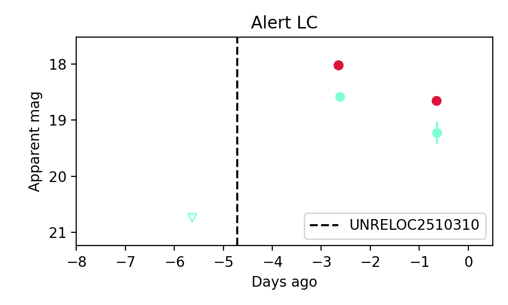
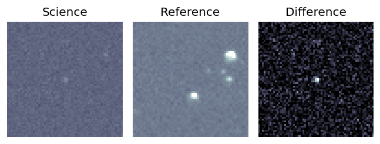
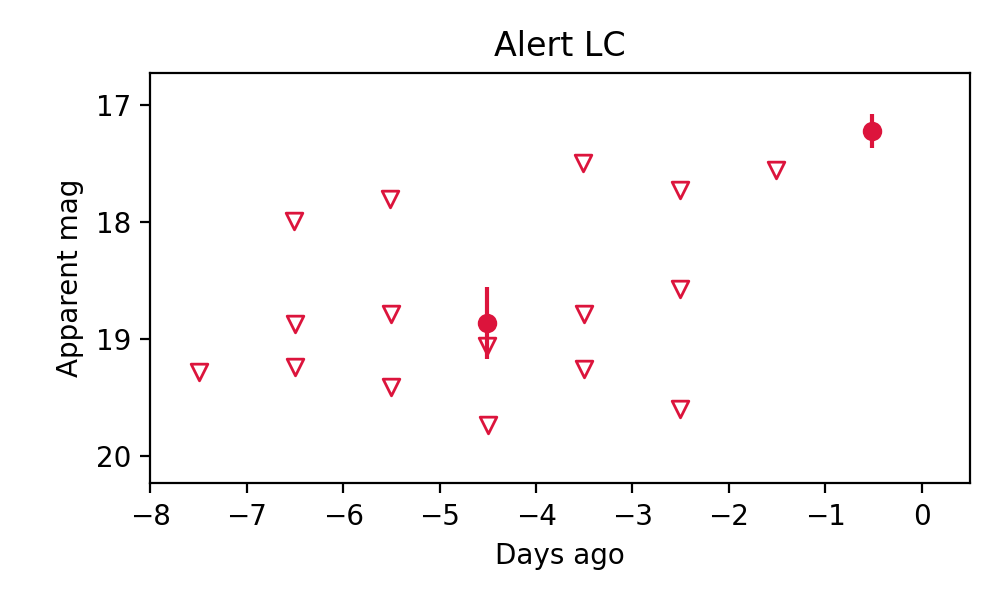
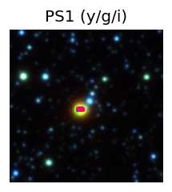
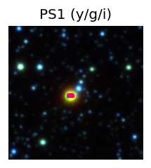
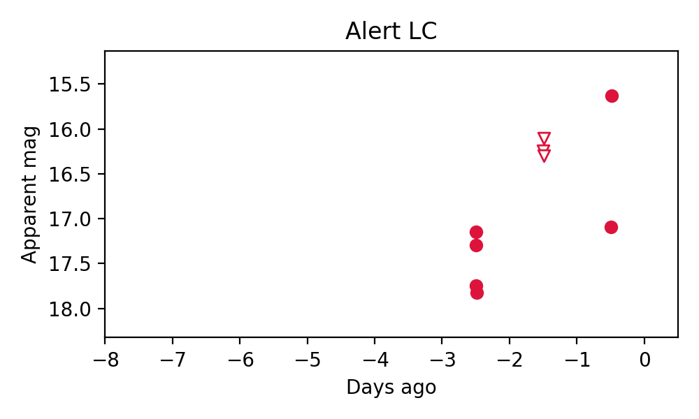
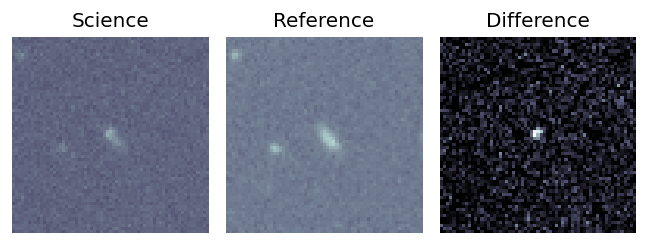
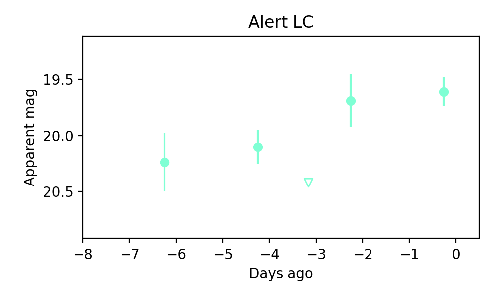

Candidate List 20251104Previous Day Next Day
Section 1: New Sources (age<1d) Section 2: Old (1-5d) sources observed last nightplaceholder
Section 1: New Afterglow/FBOT Cands Last Night (0)
Section 2: Older Sources Observed Last Night (6)
0. ZTF25acbqaob (Afterglow?) [Back to Top] [Share] [Trigger Swift] [Fritz] [Lasair]RA, Dec: 39.41111, 71.19553 2h37m38.67s, 71d11m43.89sGalactic (l, b): 131.34716, 10.08002 ext(g-r) = 0.886


TESS: Sectors [18 19 25 52 58 59 78 79 86]
PS1: 0 sources in 3 arcsec
LegacySurvey: 0 sources in 3 arcsec

Extinction-corrected gr color:
From alerts: -0.45 +/- 0.04 mag
Rise Rate:
g: -99 mag/day
r: -99 mag/day
i: -99 mag/day
Fade Rate:
g: 0.33 mag/day
r: 0.2 mag/day
i: -99 mag/day
1. ZTF25accigsa (Afterglow?) [Back to Top] [Share] [Trigger Swift] [Fritz] [Lasair]RA, Dec: 285.93201, 14.95715 19h 3m43.68s, 14d57m25.75sGalactic (l, b): 47.64433, 4.10593 ext(g-r) = 0.93

TESS: Sectors [ 40 54 80 81 119]
PS1: 1 source in 3 arcsec Closest: d = 3.69 arcsec photoz=0.74+/-0.05 peak abs mag = -27.29
LegacySurvey: 0 sources in 3 arcsec

Extinction-corrected gr color:
From alerts: -0.36 +/- 0.2 mag
Rise Rate:
g: 0.71 mag/day
r: 0.44 mag/day
i: -99 mag/day
Fade Rate:
g: 0.32 mag/day
r: 0.32 mag/day
i: -99 mag/day
2. ZTF25accqeyb (FBOT?) [Back to Top] [Share] [Trigger Swift] [Fritz] [Lasair]RA, Dec: 155.7044, 41.12984 10h22m49.06s, 41d 7m47.43sGalactic (l, b): 178.51694, 56.53355 ext(g-r) = 0.016


TESS: Sectors [21 48]
SDSS (10 arcsec):Found SDSS phot-z: z=0.28; peak abs mag = -21.18
PS1: 0 sources in 3 arcsec
LegacySurvey: 1 sources in 3 arcsec Closest: d = 1.32 arcsec, 169.2 deg (east of north) photoz=0.02 (68% bounds 0.01, 0.05), type=EXP peak abs mag = -15.5 (68% bounds -14.15, -17.16)

Extinction-corrected gr color:
From alerts: 0.06 +/- 99 mag
Rise Rate:
g: 0.5 mag/day
r: 0.6 mag/day
i: -99 mag/day
Fade Rate:
g: -99 mag/day
r: -99 mag/day
i: -99 mag/day
3. ZTF25accqwsb (Afterglow?) [Back to Top] [Share] [Trigger Swift] [Fritz] [Lasair]RA, Dec: 241.66701, 14.85311 16h 6m40.08s, 14d51m11.20sGalactic (l, b): 28.04956, 43.11307 ext(g-r) = 0.044
TESS: Sectors [ 51 117]
PS1: 0 sources in 3 arcsec
LegacySurvey: 1 sources in 3 arcsec Closest: d = 5.67 arcsec, 110.4 deg (east of north) photoz=0.77 (68% bounds 0.69, 0.91), type=REX peak abs mag = -26.26 (68% bounds -25.94, -26.68)

Rise Rate:
g: -99 mag/day
r: 1.19 mag/day
i: -99 mag/day
Fade Rate:
g: -99 mag/day
r: 0.37 mag/day
i: -99 mag/day
4. ZTF25accrcrb (FBOT?) [Back to Top] [Share] [Trigger Swift] [Fritz] [Lasair]RA, Dec: 279.955, -24.28218 18h39m49.20s, -24d-16m-55.84sGalactic (l, b): 9.89852, -8.4188 WARNING: -1.16 deg from ecliptic plane ext(g-r) = 0.378 

TESS: Sectors 92
PS1: 1 source in 3 arcsec Closest: d = 1.00 arcsec photoz=0.07+/-0.01 peak abs mag = -22.73
LegacySurvey: 0 sources in 3 arcsec

Rise Rate:
g: -99 mag/day
r: 0.57 mag/day
i: -99 mag/day
Fade Rate:
g: -99 mag/day
r: -99 mag/day
i: -99 mag/day
5. ZTF25acctwnl (Afterglow?) [Back to Top] [Share] [Trigger Swift] [Fritz] [Lasair]RA, Dec: 144.39913, 15.57854 9h37m35.79s, 15d34m42.75sGalactic (l, b): 217.07742, 43.70632 WARNING: 1.34 deg from ecliptic plane ext(g-r) = 0.035
TESS: Sectors [45 46 72]
SDSS (10 arcsec):Found SDSS phot-z: z=1.00; peak abs mag = -24.65
PS1: 0 sources in 3 arcsec
LegacySurvey: 1 sources in 3 arcsec Closest: d = 2.78 arcsec, 226.2 deg (east of north) photoz=0.08 (68% bounds 0.05, 0.1), type=SER peak abs mag = -18.19 (68% bounds -17.34, -18.74)

Rise Rate:
g: 0.8 mag/day
r: -99 mag/day
i: -99 mag/day
Fade Rate:
g: 0.29 mag/day
r: -99 mag/day
i: -99 mag/day